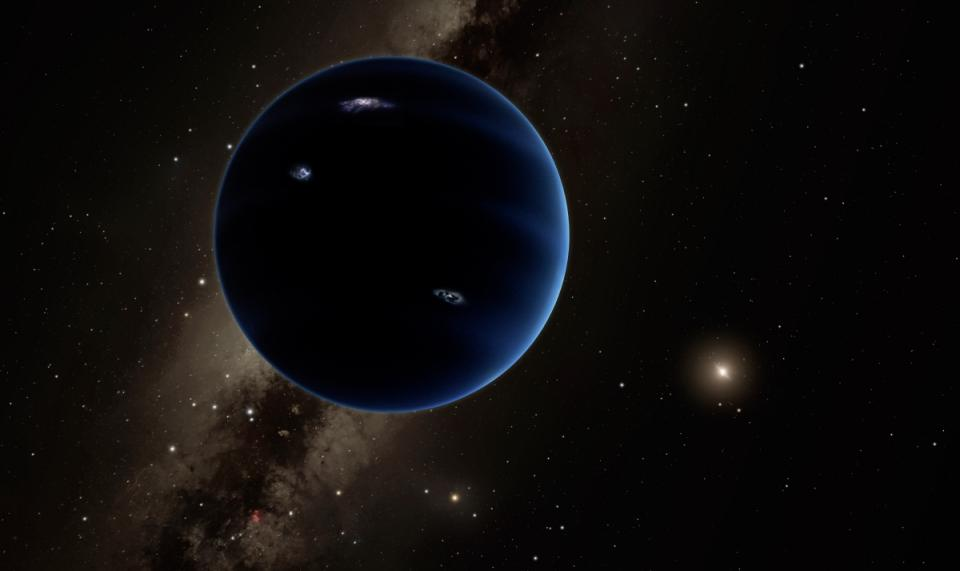

New evidence points to giant 9th planet on solar system edge
CAPE CANAVERAL, Fla. (AP) — The solar system may have a ninth planet after all.
This one is 5,000 times bigger than outcast Pluto and billions of miles farther away, say scientists who presented "good evidence" for a long-hypothesized Planet X on Wednesday.
The gas giant is thought to be almost as big as its nearest planetary neighbor Neptune, quite possibly with rings and moons. It's so distant that it would take a mind-blowing 10,000 to 20,000 years to circle the sun.
Planet 9, as the pair of California Institute of Technology researchers calls it, hasn't been spotted yet. They base their prediction on mathematical and computer modeling, and anticipate its discovery via telescope within five years or less.
The two reported their research Wednesday in the Astronomical Journal because they want people to help them look for it.
"We could have stayed quiet and quietly spent the next five years searching the skies ourselves and hoping to find it. But I would rather somebody find it sooner, than me find it later," astronomer Mike Brown told The Associated Press.
"I want to see it. I want to see what it looks like. I want to understand where it is, and I think this will help."
Brown and planetary scientist Konstantin Batygin feel certain about their prediction, which at first seemed unbelievable to even them.
"For the first time in more than 150 years, there's good evidence that the planetary census of the solar system is incomplete," Batygin said, referring to Neptune's discovery as Planet 8.
Once it's detected, Brown insists there will be no Pluto-style planetary debate. Brown ought to know; he's the so-called Pluto killer who helped lead the charge against Pluto's planetary status in 2006. (Once Planet 9, Pluto is now officially considered a dwarf planet.)
"THIS is what we mean when we say the word 'planet,' " Brown said.
Brown and Batygin believe it's big — 10 times more massive than Earth — and unlike Pluto, dominates its cosmic neighborhood. Pluto is a gravitational slave to Neptune, they pointed out.
Another scientist, Alan Stern, said he's withholding judgment on the planet prediction. He is the principal scientist for NASA's New Horizons spacecraft, which buzzed Pluto last summer in the first-ever visit from Planet Earth. He still sees Pluto as a real planet — not a second-class dwarf.
"This kind of thing comes around every few years. To date, none of those predicts have been borne out by discoveries," Stern said in an email Wednesday. "I'd be very happy if the Brown-Batygin were the exception to the rule, but we'll have to wait and see. Prediction is not discovery."
Brown and Batygin shaped their calculation on the fact that six objects in the icy Kuiper Belt, or Twilight Zone on the far reaches of the solar system, appear to have orbits influenced by only one thing: a real planet. The vast, mysterious Kuiper Belt is home to Pluto as well.
Brown actually discovered one of these six objects more than a decade ago, Sedna, a large minor planet.
"What we have found is a gravitational signature of Planet 9 lurking in the outskirts of the solar system,' Batygin said. The actual discovery, he noted, will be "era-defining."
Added Brown: "We have felt a great disturbance in the force."
Scott Sheppard of the Carnegie Institution for Science in Washington said Brown and Batygin's effort takes his own findings to "the next level." Two years ago, he and a colleague suggested a possible giant planet.
"I find this new work very exciting," Sheppard said in an email. "It makes the distant Super-Earth planet in our solar system much more real. I would say the odds just went from 50 percent to 75 percent that this distant massive planet is real."
Depending on where this Planet 9 is in its egg-shaped orbit, a space telescope may be needed to confirm its presence, the researchers said. Or good backyard telescopes may spot it, they noted, if the planet is relatively closer to us in its swing around the sun. It's an estimated 20 billion to 100 billion miles away.
The Caltech researchers prefer calling it Planet 9, versus the historical term Planet X. The latter smacks of "aliens and the imminent destruction of the Earth," according to Brown.
Who knows, there could even be a Planet 10 out there well beyond No. 9, but there aren't enough data at this point to guess, Brown said.
The last real planet to be discovered in our solar system was Neptune in 1846. Pluto's discovery came in 1930; humanity got to see the small icy world and its main moon Charon up close for the first time last July thanks to New Horizons.
The spacecraft, unfortunately, is in the opposite direction of Planet 9, according to the researchers, and thus unable to help in its detection.
Brown realizes skepticism will exist until the planet is actually observed. History is packed with mistaken planet-seekers, he said, and so "standing up and saying we're right this time makes us almost look crazy — except I'm going to stand up and say we're actually right this time."
He couldn't resist this jab on his @plutokiller Twitter account:
"OK, OK, I am now willing to admit: I DO believe that the solar system has nine planets."